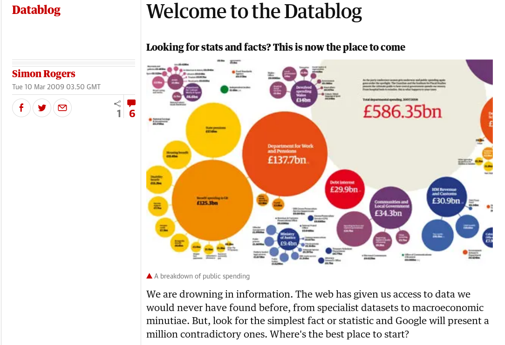
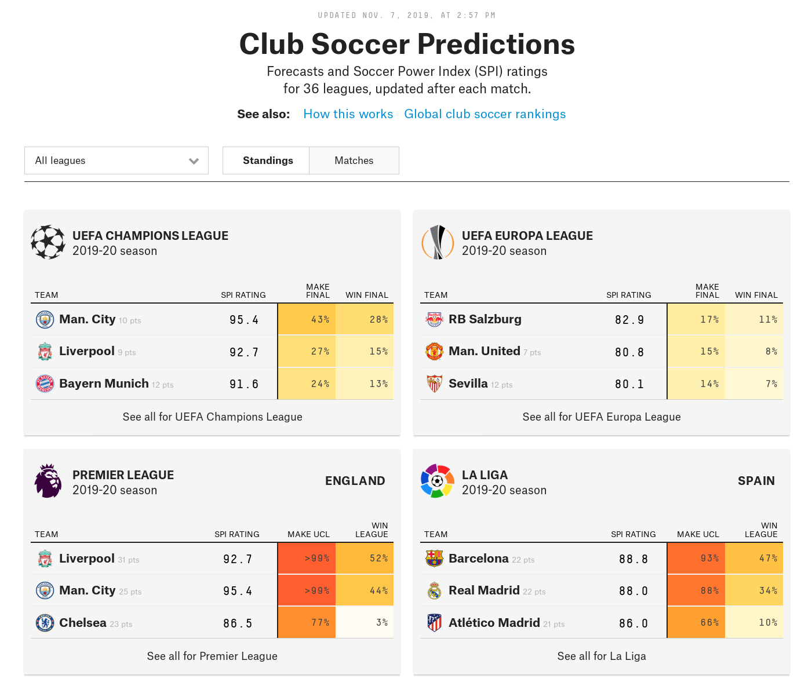

From social science techniques to datascience skills
flow
From Social Science Techniques to Data Science Skills
- Adolfo Antón Bravo , Ontology Engineering Group-Universidad Politécnica de Madrid (Spain), adolfo.anton.bravo@upm.es
- Ana Serrano Tellería, University of Castilla La Mancha (Spain), anaserranotelleria@gmail.com
Abstract
In very few years
In journalism, we have gone from looking at social science techniques, what was called precision journalism, to dealing with open data as a huge source of information.
The data journalism to come
Journalism connects with data science in the sense of using –again– scientific methods to extract knowledge and insights from structured data.
Prototypes
This article offers an overview of that evolution and focuses on some prototypes that have emerged in this new journalistic ecosystem of data journalism, data visualisation and data literacy.
Keywords
Data Journalism, Data Visualisation, Journalism, Data science, Social Science, Open Data
Introduction
- Practice runs parallel to experimentation.
- Long string of prototypes
- Experimentation;
- Interest;
- Skills
2009
The modern data journalism
2009, sheltered by:
- the open data portals
- the popularity of open source and
- standardization of HTML5
the perfect scenario
- sources of data
- tools
- output formats
First piece of The Guardian Data Blog
 https://www.theguardian.com/news/datablog/2009/mar/10/blogpost1
From Precision Journalism, 1967
- Philip Meyer's Detroit Riots
- First piece of precision journalism
- The methods of investigation from social sciences
- Applied to journalism
Detroit Riots

MC5 Kick out the Jams
"The Motor City is Burning" by John Lee Hooker
To Data Journalism, 2009-
- Data sources from Open Data portals
- Tools from computer science
- Web
and eventually Data Science
The journalist as a kind of
- data scientist
- web designer
- web developer
- computer programmer
What is Data Journalism?
Data Journalism is the new Punk
Simon Rogers, november 2012
Telling stories based on Data
Method of data journalism, Paul Bradshaw
- Compile
- Clean
- Context
- Combine
- Communicate
Rewind: Computer Assisted Reporting, 1952
- The CBS tried to predict the results of the USA presidential elections using a computer.
- That was the first national broadcast (coast to coast) of a national election.
- Walter Conkrite as M.C.
- A Remington Rand UNIVAC predicted an Eisenhower's landslide victory.
- Conkrite explained that they used it as a complement not as the main part of his investigation
UNIVAC
We saw it as an added feature to our coverage that could be very interesting in the future, and there was a great deal of pride that we had this exclusively. But I don't think that we felt the computer would become predominant in our coverage in any way.
IRE and NICAR
- Is it the work with computers and data what determines to be CAR?
- Meyer's “Detroit Riots” research introduced the methodoloy in the daily journalistic work.
- In 1989 is founded the NICAR National Institute of Computer-Assisted Reporting with the support of the IRE (Investigative Reporters and Editors)
Landing in Spain, 1990
- José Luis Dáder and Pedro Gómez had attended to various events.
- The development of 'precision journalism' in the USA.
- A new socio-statistical information
Forward to Data Journalism
- Data Journalism
- Data Driven Journalism
- Database Journalism
Knowledge
- Journalism
- Design
- Programming
- Statistics
To operate as a
- Data journalist
- Computer assisted repoerter
- newsroom developer
- journo-geek
Troy Thibodeaux, Poynter
With a set of tools
- Statistical methods of social scientists
- Mapping tools of GIS
- Visualisation arts of statistics and graphic design
- Computer science skills
- Web development
- General-purpose programming
- Database administration
- Systems engineering
- Data mining
- Cryptography
To develop
- Classic CAR stories
- Interactive graphics
- Applications
- Tools for writing Websites
But What is Data?
- Anything countable can count as data
- Anything that a computer processes is data.
Real Data Journalism
- A tendency to look for what is categorizable, quantifiable and comparable in any news topic
- A conviction that technology, properly applied to these aspects, can tell us something
about the story that is both worth knowing and unknowable in any other way.
Recommendations
Thibodeaux
- Do not care what you know
- Do not mind how to write the story
- Either through words or pixels, "write!".
- Pick up what's at hand
- Learn what you need
- Get to something real as soon as possible.
Holovaty
- Who cares?
- I hope my competitors waste their time arguing about this as long as
possible.
Bradshaw
- All the information is reduced to numbers
- To 0 and 1, bits.
- The data are not only the source but also the tool
- Or the story
- Or it can be both
The misunderstanding of data visualisation
- Not having into account visualisation as part of the
analytic stage
- One of the typical errors of many data journalism
- Data analysis it is also performed with visualisation tools.
Open Data Journalism
- Open data can be used freely as a data source
- The journalistic product is open data
- The data sources and the methodology are published and shared
Spanish Data Journalism Scene
- Data Journalism Working Group
- Master from URJC-Unidad Editorial
- Open Data and Data Journalism Conference.
- Data Journalism Workshop.
- El Confidencial, ABC, El Mundo.
- Civio, Datalab, Datadista
Prototypes
- England, August 2011.
- A young is killed by police in Tottenham
- Protests and riots in the streets
- Meyer's "Detroit Riot" is ans inspiration to deal with it.
Our proposal: 13 prototypes
- Applications or Newsapps
- Interactive tools
- Classic stories CAR
- Tools for writing
- Websites with a set of articles
- Data visualisation.
- General purpose applications
- Public service tools
- Maps
- Single-page projects
- Video
- Leaks
- Social sciences approach.
Newsapps
Interactives
 https://projects.fivethirtyeight.com/soccer-predictions/
Large Projects
Support for Collaborative Projects
Set of Articles
Data Visualisation
General Purpose Applications
Public Service
Maps
One Page Project
Video Support
Leaks
Social Science Driven Projects. Precision Journalism

Conclussions
Context
- Object of study
- Scope of the proposal.
- Identification of prototypes
Conclussion?
- We get 13 prototypes
- It is a work in progress
- The data journalism community will say.